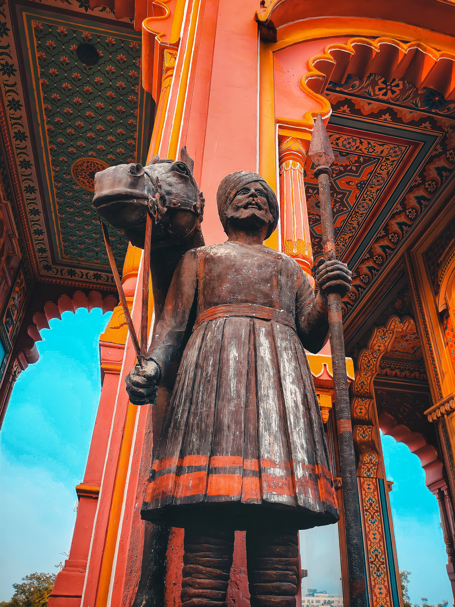
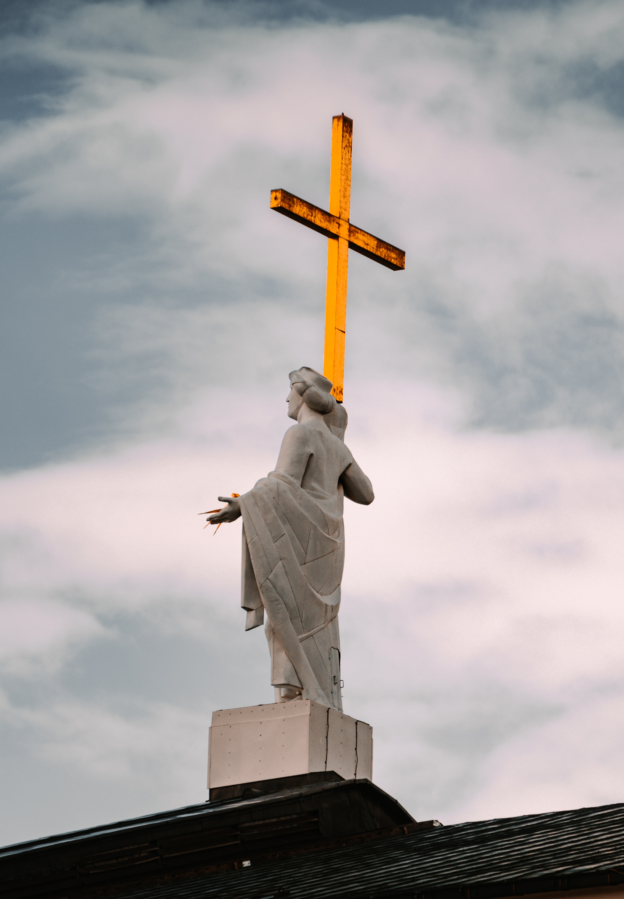

- Tools for Slowing Down
- Chioe Geoghegan & Chloe Reith

- The (Old) New Spirit of Curating and Myths of Nomadism
- Tim Genties
- Pressing Singularities
- Tendai John Mutambu & Robyn Maree Pickens
- We're in This Together
- Vera Mey
-
The Curatorial as a Liveable Subject Position: Hospitality and
Differential Consciousness
- Danny Butt
- Community, Community Art, Community Art in Howick
- Balamohan Shingade
- Feeling Welcome?
- Louisa Afoa & Ioana Gordon-Smith

- On Friendship
- Rebecca Boswell